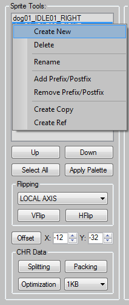
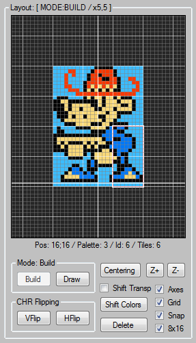

SPReD Quick Guide
Contents:
The SPReD is a tool for converting prepared sprite images into a NES / SMS compatible format. Drawing mode is also available.
The main features are:
handy drawing mode
group operations on sprites
sprites data packing ( 1/2/4/8 KB ) and optimization
8x16 mode support
images import/export
export to NES: CA65/NESasm / SMS: WLA-DX
built-in Python script editor for writing custom data export scripts
NES ↔ SMS data conversion*
* You can load a NES project into SMS editor and vice versa.
CHR - 1x1 tile ( 8x8 pixels ).
At the left side of the main window you can see the “Sprite Tools” box. Main sprite manipulations are done here. All sprites you create will appear in the upper list box. A right mouse button click on the list box opens the context menu you can see at the picture.
Click on the Main Menu → Sprites to see all available hotkeys for this section.
Create:
There are two ways to create a sprite. The first one, you can import an image as a sprite. The second one, you can click the 'Create New' item in the context menu or in the Main Menu → Sprite → Create New. But before you should select what sprite mode you will use ( check/uncheck the “8x16” flag in the “Layout” section ).
Delete:
Select sprites and click the “Delete” item in the context menu or in the Main Menu → Sprite → Delete.
Rename:
Select a sprite you want to rename and click the “Rename” item in the context menu or in the Main Menu → Sprite → Rename.
Add Prefix/Postfix:
For example, when you make mirrored sprites you will need to name them correctly. So you may need to add some prefix/postfix to their names ( _LEFT, _RIGHT etc ). Select sprites, click the “Add Prefix/Postfix” item in the context menu or in the Main Menu → Sprites → Add Prefix/Postfix.
Copy:
There are two options to make a sprite copy: full copy ( Create Copy ) and referenced copy ( Create Ref ). The “referenced copy” shares the same CHR bank as the original sprite. It helps to minimize CHR data. For example, when you make mirrored NES sprites, you can create them as referenced copies. So all the mirrored sprites will share the same CHR data with the original ones.
Select sprites, click the “Create Copy” / ”Create Ref” item in the context menu or in the Main Menu → Sprites → “Create Copy” / ”Create Ref”.
Apply Palette:
NES: You can apply a palette to a group of selected sprites. Select sprites, select an active palette and press the “Apply Palette” button.
SMS: Disabled.
Transformations:
Flipping
You can flip selected sprites around local or global axes. Select sprites, select the “LOCAL AXIS” or “GLOBAL AXIS” mode and press the “VFlip” / “HFlip” button.
SMS: The SMS hardware doesn't support flipped sprites. So when you will load flipped NES sprites into SMS tool you will see some glitches. To fix that you can flip them again by pressing the “VFlip” / “HFlip” button with unchecked “Transform positions” option.
Apply Offset
There are two ways to apply an offset to your sprite(s) position: you can set a new offset value or add an offset to an existing value. Select sprites, input an offset value, press the “Offset” button and follow instruction.
CHR data manipulations:
Optimization
Press the “Optimization” button to remove all unused/empty/duplicate CHRs in all CHR banks.
Packing
In some cases you may need to pack all your sprites data into a set of 1/2/4 or 8 KB ( SMS ). Select sprites, select data block size and press the “Packing” button. This operation performs iterative optimization after adding a data of each sprite to a CHR bank. Thus, it deletes all unused/empty/duplicate CHRs.
Splitting
This is a backward operation for the “Packing” one. All sprites will have their own CHR banks even Ref ones.
The middle part of the main window contains the layout viewport and all operations related to sprite's CHRs modifications. Use a LEFT mouse button to pan the viewport and a mouse wheel to scale it.
Click on the Main Menu → Layout to see all available hotkeys for this section.
Build/Draw modes:
There are two modes available for sprite editing: build and draw mode ( the “Build” and “Draw” buttons ).
The build mode:
In the “Build mode” you can add, delete, move, flip a sprite's CHRs and shift colors of whole sprite ( NES ).
To add a CHR manually to your sprite you can select the CHR in the CHR bank and drag and drop it to the layout window using a RIGHT mouse button.
To delete a CHR you must click it and press the “Delete” button.
To move a selected CHR inside the layout viewport to another position you should drag and drop it using a RIGHT mouse button.
NES: To flip a CHR you must click it and press the “VFlip” / “HFlip” button ( the SMS hardware doesn't support flipped sprites ).
NES: Sometimes, when you import prepared images, you may find that color indices don't match to each other in the imported sprites. To fix that issue you can shift the color indices to match all the sprites. You can do that by pressing the “Shift Colors” button. To shift the transparency index, you should set the “Shift Transp” flag.
The draw mode:
In the “Draw mode” you can draw your sprite image. Just select a color and draw! :)
NES: Also you can change a CHR palette. When you draw pixels, you also see an active palette assigned to the current CHR. Just click on another palette to change it.
Other options:
Centering
Press the “Centering” button to center an active sprite in the viewport.
Zoom In/Out
Press the “Z+” / “Z-” buttons to zoom in / out an active sprite.
Axes
Show axes.
Grid
Show grid.
Snap
Snap a sprite's CHRs to a 8x8 grid.
8x16
Enable/disable the 8x16 mode.
Warning: It's not recommended to mix the 8x8 and 8x16 mode sprites in one project. This may cause errors!
At the right side of the main window you can see the CHR bank which contains graphics linked to an active sprite and the palettes.
Click on the Main Menu → CHR to see all available hotkeys for this section.
Add / Remove a CHR
Press the “+” button to add a CHR at the end of the bank data.
Press the “-” button to remove the last CHR.
Copy / Paste
Also you can copy/paste a selected CHR by clicking the “Copy” / “Paste” item in the context menu or in the Main Menu → CHR → Copy / Paste.
Fill with color
Select a CHR and an active color and click the “Fill With Color” item in the context menu or in the Main Menu → CHR → Fill With Color.
NES: The leftmost color of each palette is a transparent color. So if you fill out a CHR with a color from the leftmost color slot of any of 4 palettes, then drag and drop it to an active sprite and make optimization, that CHR will be deleted as empty.
SMS: The leftmost color slot of the first palette is reserved for a transparent color. For example, when you import an image with alpha channel, the alpha channel color will be assigned to the leftmost color slot of the first palette. So keep this in mind when you work with colors.
Rotate and flip
Press the appropriate buttons to flip or rotate ( clockwise ) a selected CHR. It automatically affects on a sprite.
Additional info
At the bottom of the CHR bank you can see the additional information: the number of tiles in the bank, the number of bytes in the bank ( platform dependent value ), the bank index, the number of sprites linked to the bank and the total number of banks in a project. For example, “BANK: 1(8) of 1” means: the current bank index is 1, 8 sprites linked to this bank and the total number of banks is 1.
There are 4 user defined palettes ( 1, 2, 3, 4 ). Press Shift+1, 2, 3, 4 to switch between them and press Ctrl+1, 2, 3, 4 to switch between colors inside an active palette.
To assign a new color to an active palette, just select a color slot inside the palette and click on any color on the main palette.
NES: As mentioned before, the leftmost color of each palette is a transparent color.
SMS: The leftmost color of the first palette is reserved for a transparent color.
Main Menu → File → Load / Save
NES project file has a .sprednes extension.
SMS project file has a .spredsms extension.
You can load a NES project into SMS tool and vice versa.
Main Menu → File → Import
There are four data formats available for import:
NES: 4 colors images / SMS: 16/4 colors images ( .png or .bmp )
CHR banks ( .chr or .bin )
Palette ( 192 bytes ) ( .plt )
Note: BMP images have no alpha-channel.
Main Menu → File → Export
There are two data formats available for export:
NES: CA65/NESasm / SMS: WLA-DX ( 1/2/3/4 bpp CHRs data is also supported )
Images ( .png or .bmp )
Main Menu → File → Export Script Editor (Alt + X)
If you need your own data format, you can write an export script using Python. Press Alt+X to open a simple Python script editor.
The Python API you can find here './doc/SPReD_Data_Export_Python_API.html'.
The sample script of using the API: `./scripts/SPReD_project_stats.py`
The data export API was designed to work with a current application data state. So you can retrieve data, but you can't modify it. Application data will always remain unchanged.
Main Menu → File → Description
The project description window. You can write a short description of your project. Optionally the window can be opened automatically after loading a project.
Main Menu → File → Statistics
A brief statistics of your project.
Copyright (c) 2019-2020 0x8BitDev